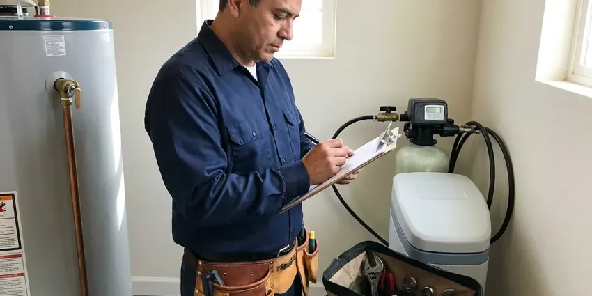
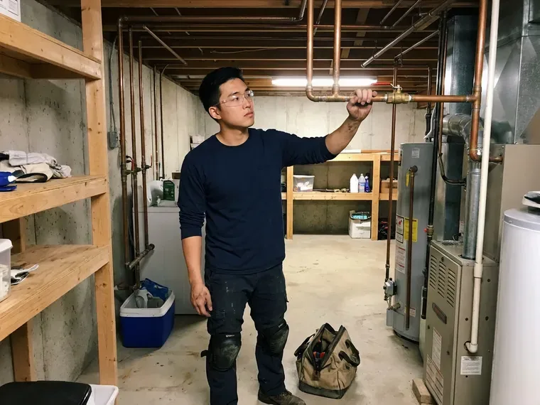

Hydrojet Plumbing in St. Albans, VT
For a longer-lasting fix in St. Albans, VT, our hydrojetting removes the buildup that causes repeat clogs.
- Quick, Thorough Cleaning
- Before and After Camera Video
- Experienced Technicians
- Quick Clog Removal

Get Full Flow Back to Your Drains in St. Albans, VT.
Call now to schedule hydrojetting and a camera inspection at the same visit.
Hydrojet Plumbing in St. Albans, VT
CKV Plumbing uses trailer and cart jetters that push water at 3,000 to 4,000 psi through specialized nozzles. Different nozzles do different jobs. Penetrating, spinning and root-cutting nozzles each handle a different kind of blockage.
Work we handle every week:
- Camera inspection before and after jetting
- Kitchen grease line jetting
- Storm and yard drain flushing

Additional Plumbing Maintenance Services in St. Albans, VT
Our maintenance and specialty plumbing services in St. Albans, VT catch small problems before they become emergencies.



Residential Plumbing Service in St. Albans

Customers
Why Choose CKV Plumbing for Hydrojet Plumbing in St. Albans, VT?
Homeowners in Vermont run into scale, grease and roots in their drains. Town water systems in St. Albans and other communities are generally reliable, but older service lines can add sediment and discolored water. Over years that scale builds into a rough crust inside cast iron and galvanized drains, and every bit of grease and hair that goes down sticks to it. Jetting removes the crust.
- Prevents Recurrence, Removing the buildup cuts down on repeat clogs.
- Chemical Free, We use only water, so your pipes and septic tank are safe.
- Verified Results, Before and after camera video shows what came out of the line.
Citywide Coverage
Older neighborhoods around St. Albans have clay and cast iron sewers. We go gentler on those. PVC in newer areas takes full pressure, and commercial lines need grease nozzles.
Experienced Team
Years of jetting show up in how we work. We know when to stop. A line that will not clear after several passes may have a collapsed section, and pushing harder can bury the nozzle or damage the pipe, so our technicians pull back and camera it rather than forcing the issue.
Safety-First Approach
High-pressure water can cause serious injury, so our technicians wear eye protection and gloves and keep the hose under control. Nobody leaves a running jetter. A hose guide at the cleanout keeps the hose from whipping, and we keep kids and pets clear.
Trusted Certified St. Albans Plumbing Services Professionals
At CKV Plumbing, we are proud to offer certified plumbing services throughout St. Albans, VT. Those papers on the wall mean something. Our plumbers hold recognized industry credentials, and they follow strict safety and quality rules on every repair, installation and maintenance call we run.
Call Us Now PHCC Plumbing Contractor Recognition
PHCC Plumbing Contractor Recognition Better Business Bureau (BBB) Accreditation
Better Business Bureau (BBB) Accreditation Angi Certified Pro
Angi Certified Pro ISO 9001 Quality Management Certification
ISO 9001 Quality Management CertificationDrain and Sewer Jetting Services in St. Albans, VT
Sewer Lateral Jetting in St. Albans, VT
The lateral from your house to the street handles every drain in the house, so buildup there causes backups everywhere at once. We jet it from the cleanout to the tap. Settled low spots get extra passes, and we mark them on the video for future reference.

Hydrojetting vs Snaking Cost Comparison in St. Albans, VT
Snaking a main line typically costs $200 to $450, while residential hydrojetting usually runs $400 to $900 with a camera inspection. Jetting costs more up front. Because jetting removes the buildup that causes repeat clogs, many homeowners spend less over a few years than they would on repeated snaking visits for the same line.
Scheduled Jetting Maintenance in St. Albans
Properties with chronic drain issues benefit from scheduled jetting. Commercial kitchens often jet quarterly. Homes with root-prone sewers usually jet every year or two, and we keep a camera record from each visit so you can see whether the roots are coming back slower, faster or the same.
After-Hours Hydrojet Service in St. Albans
Backups at night or on weekends are handled with the same gear as any weekday call. On-call trucks are fully equipped. That means we can clear and jet a grease-packed restaurant line or a root-filled home sewer in one visit, without waiting until Monday to bring the jetter back for a second trip.
Commercial and Restaurant Hydrojetting in St. Albans
Hotels, apartment complexes and shopping centers need drains that keep up with heavy use every day. Downtime costs them money. We set up jetting plans for each building's needs, schedule work during slow hours, and keep the camera footage on file so property managers can show tenants or owners the condition of the lines.
Water-Only Drain Cleaning in St. Albans, VT
Hydrojetting uses only water, so nothing caustic goes into your pipes or septic tank. Caustic cleaners can harm old pipe. The debris flushes away as normal waste, leaving nothing behind to harm pipe or septic bacteria.
Hard Water Scale Removal in St. Albans, VT
Scale builds slowly inside drain pipe, narrowing it a little more each year. Town water systems in St. Albans and other communities are generally reliable, but older service lines can add rust and discolored water. A jetter with a scouring nozzle strips that scale from the walls, and on heavily scaled cast iron we may follow up with a descaling chain head to finish the job. You can see the change on video.

Storm and Yard Drain Jetting in St. Albans, VT
Yard drains, channel drains and downspout lines fill with sand, silt and leaves between storms. Spring snowmelt and heavy rain can quickly swell rivers in Vermont, and many basements take on water during the wet season. A clogged yard drain sends that water back toward the house, so we jet the lines from the outlet end and flush the catch basins before the wet season starts. We also check the pop-up emitters.
Hydrojetting Near Me in St. Albans, VT
A local jetting crew has a good idea of the pipe before arriving. Older areas mean clay and cast iron. Newer neighborhoods have PVC that takes full pressure, while older ones need gentler settings, and knowing that before we arrive means the right nozzles are already on the truck.
Nearby service matters when a restaurant is on a regular jetting plan. Scheduled visits happen on time. We confirm every commercial visit a day ahead so a missed date never turns into a backup.
CKV Plumbing at a Glance
- Licensed and insured plumbers serving St. Albans, VT
- Same-day appointments and 24/7 emergency response
- Clear written estimates, no hidden fees
- 4.8-star rated by 553+ Vermont customers
St. Albans Map
St. Albans Information
- Population
- 6,935
- Area codes
- Local
- Service area
- St. Albans and towns within a 40 mile drive
- Nearby
- Essex Junction, Winooski, Burlington, South Burlington
Hydrojetting is useful for drain lines in St. Albans, VT that have lost diameter to buildup. Town water systems in St. Albans and other communities are generally reliable, but older service lines can add sediment and discolored water. A jetter strips that buildup off the pipe wall.
Talk to a Plumber
Reach out to CKV Plumbing for honest, reliable plumbing from people who know the trade in St. Albans, VT.
Our Specialized Plumbing Services in St. Albans, VT
At CKV Plumbing, we handle the full list of plumbing services across St. Albans, VT. We go from leak detection all the way to full system installations, for homes and commercial buildings, and we do it quickly at a fair price. Here are the core services we offer:


How We Jet Drain Lines in St. Albans, VT
CKV Plumbing follows the same order on every jetting call.
Call Us
Call (802) 209-5139 to schedule a jetting assessment. Tell us how often the drain clogs.
Camera First
Our technician cameras the line to check its condition. You get a price.
Hydrojet Cleaning
We jet the line with the right nozzle and pressure. Debris flushes downstream.
Frequently Asked Questions About Hydrojet Plumbing in St. Albans
Most hydrojetting jobs in St. Albans, VT fall between $300 and $800. We usually include the camera. The price goes up for long or deep lines, roots that need a cutting head, or lines that have to be accessed from the roof vent because there is no ground-level cleanout.
It depends on the line. Home lines get a cart jetter. Bigger lines get a trailer unit, because flow carries debris and pressure breaks it loose.
A snake bores a hole through the clog. Jetting cleans the whole pipe. The snake leaves grease, scale and root fibers on the pipe walls where they catch the next clog, while jetting removes that buildup so the line stays clear far longer.
We use cart and trailer jetters from manufacturers like Spartan and RIDGID. Each job gets its own nozzle. We carry penetrating nozzles for packed lines, spinning nozzles for grease and scale, and root-cutting heads, plus a camera with a locator so we can mark any defect on the surface.
Rental jetters exist, but they are risky without training. High pressure can injure you. Used on a cracked pipe, a jetter can also make the break worse, and without a camera you will not know the condition of the line before you start or whether the clog actually cleared.
We guarantee the line will flow freely when we leave. The service warranty is written on your invoice. If the camera shows a defect that could cause a clog to return, such as a belly or a root-filled crack, we point it out before we start so the terms are clear and nobody is surprised later.
Most home jetting jobs take one to three hours. That includes the camera work. Heavy commercial lines can take most of a day since we work in passes.
No, standard hydrojetting is maintenance and does not need a permit. Repair work is a different story. Digging up a broken section or adding a cleanout may need a permit, which we handle.
What Our Customers Say About Our Plumbing Experts

Patricia H.
We had a slab leak that two other companies could not find. CKV Plumbing located it in under an hour with a listening device. They rerouted the line through the attic instead of breaking up the floor, so we kept our kitchen tile.
Slab Leak Repair · St. Albans, VTKaren W.
After our third pinhole leak in copper, we stopped patching. CKV Plumbing gave us a written plan room by room and repiped the house in PEX while we stayed in it. The crew covered our floors every morning and cleaned up every night.
Repiping · Winooski, VT
Marcus H.
Grease from the fryer line kept clogging the kitchen drain at my diner. CKV Plumbing hydro jetted the line after closing, showed me the buildup on camera, and set us up on a quarterly cleaning so it does not catch us on a Friday again.
Drain Cleaning · Essex Junction, VTKevin O.
Before buying our house I paid for a sewer camera inspection. CKV Plumbing found a belly in the line that held standing water about forty feet from the cleanout. We used the video to get the sellers to fix it before closing.
Sewer Camera Inspection · South Burlington, VTAngela D.
Our sump pump quit during a storm and the water was an inch from the basement carpet. CKV Plumbing put in a new pump with a battery backup that same evening. We have had two heavy rains since. It kicked on both times.
Sump Pump · Winooski, VT
Brian W.
I smelled gas behind the dryer and called right away. The plumber found a corroded flex connector, replaced it, and pressure tested the whole line before turning the gas back on. He let me watch the gauge hold steady for fifteen minutes.
Gas Line Repair · Shelburne, VT